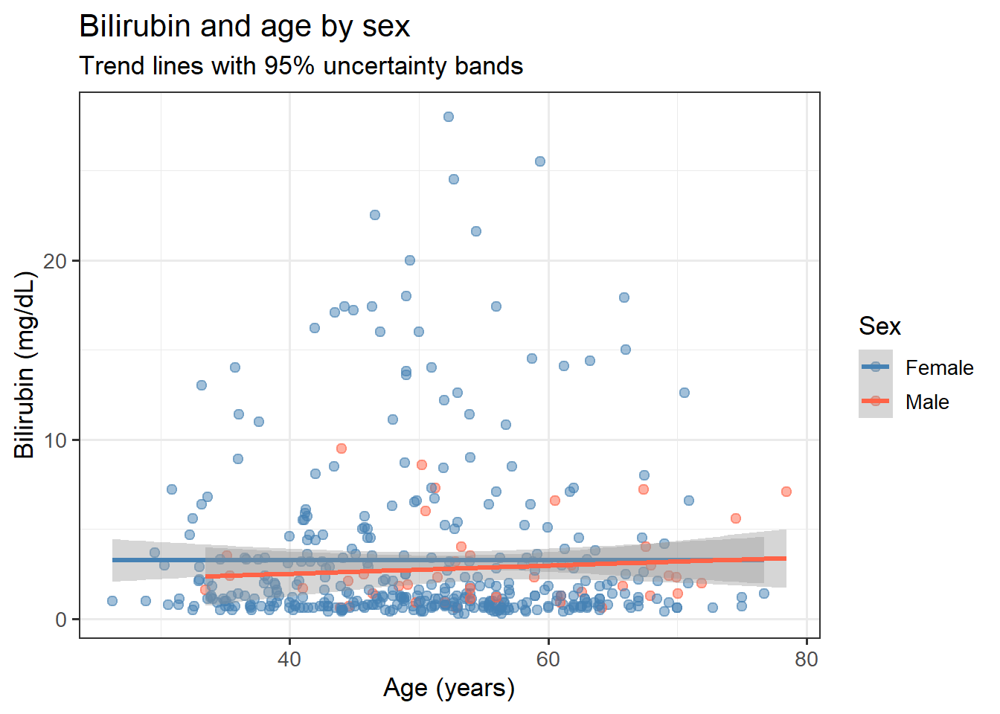
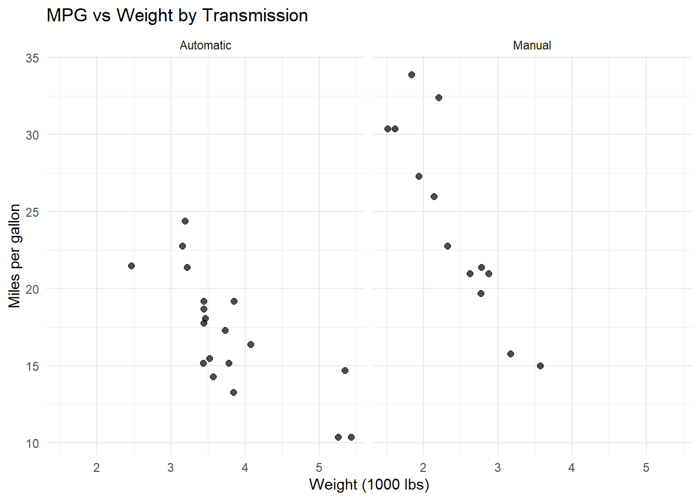
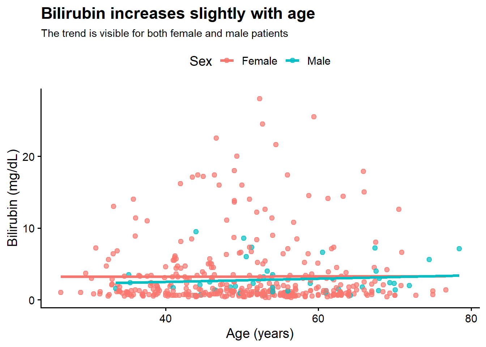
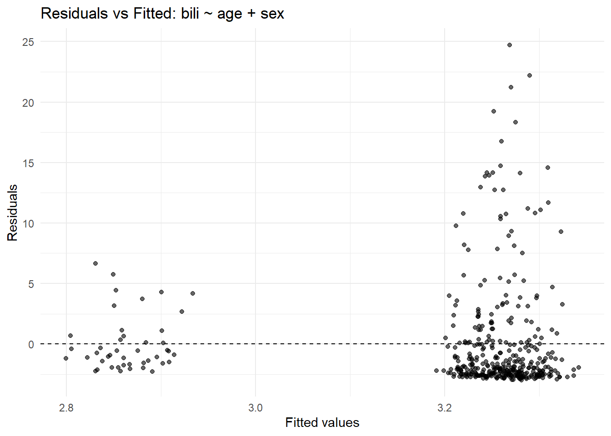
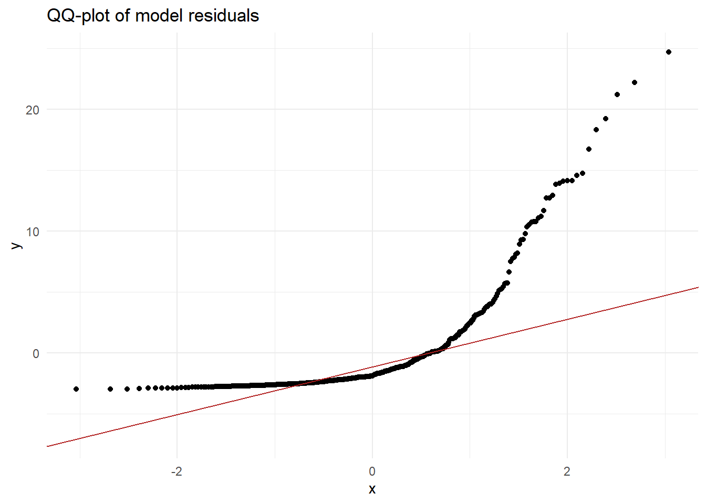
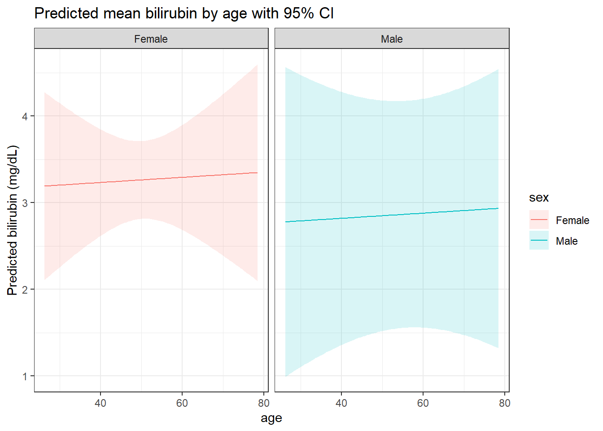
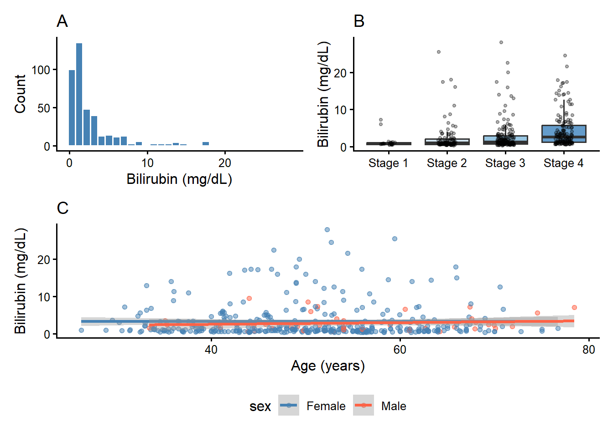

7Advanced Visualization and Scientific Communication
7.1 When Do You Use This?
You have a result and you need to communicate it clearly — in a grant proposal, a paper, or a lab meeting. Basic plots work for exploration; advanced visualization works for communication. This session teaches you to combine regression lines and uncertainty bands, compare subgroups with facets, check model assumptions visually, and build figures that are ready for journal submission.
7.2 Learning Objectives
After completing this session you will be able to:
Layer raw data, trend lines, and confidence bands in a single figure
Use facets to compare the same pattern across subgroups
Visualize model residuals and identify assumption violations
Add annotations, subtitles, and labels that communicate the key message
Build a publication-ready multi-panel figure with patchwork
7.3 Background: Design Principles for Research Figures
A useful research figure is:
Clear — the main message is easy to read at a glance
Accurate — the visual honestly reflects the data
Informative — it answers a specific research question
Honest — it shows uncertainty and does not hide variability
The questions to ask before making any figure: 1. What is the one thing I want the reader to take away? 2. Does the visual form match the data type and the question? 3. Does it show uncertainty (error bars, confidence bands)? 4. Is the axis range honest (does it start at zero if appropriate)?
7.4 1. Layered Plots: Raw Data + Trend + Uncertainty
Layered plots let you combine raw observations, a trend line, and uncertainty bands in one figure.
pbc %>%ggplot(aes(x = age, y = bili, color = sex)) +geom_point(alpha =0.5, size =2) +geom_smooth(method ="lm", se =TRUE) +scale_color_manual(values =c("Female"="steelblue", "Male"="tomato")) +labs(title ="Bilirubin and age by sex",subtitle ="Trend lines with 95% uncertainty bands",x ="Age (years)",y ="Bilirubin (mg/dL)",color ="Sex" ) +theme_bw(base_size =13)
`geom_smooth()` using formula = 'y ~ x'

7.4.1 What this figure tells us
The points show the raw relationship between age and bilirubin.
The trend lines estimate the average pattern for each sex.
The shaded bands show uncertainty around those estimates.
If the bands overlap, the difference between groups is less certain.
7.5 2. Faceting to Compare Subgroups
Faceting repeats the same plot for each level of a variable. Use it when the research question asks: “is this pattern consistent across subgroups?”
pbc %>%ggplot(aes(x = age, y = bili)) +geom_point(alpha =0.6, color ="steelblue") +facet_wrap(~ sex) +geom_smooth(method ="lm", se =TRUE, color ="darkred") +labs(title ="Bilirubin by age for female and male patients",x ="Age (years)",y ="Bilirubin (mg/dL)" ) +theme_minimal()
`geom_smooth()` using formula = 'y ~ x'

Faceting is useful when the research question asks whether a pattern is consistent across groups. It highlights differences in slope, spread, and uncertainty.
7.6 3. Annotating for Communication
The best figures include titles and subtitles that state the conclusion, not just describe the data.
pbc %>%ggplot(aes(x = age, y = bili, color = sex)) +geom_point(size =2, alpha =0.7) +geom_smooth(method ="lm", se =FALSE) +labs(title ="Bilirubin increases slightly with age",subtitle ="The trend is visible for both female and male patients",x ="Age (years)",y ="Bilirubin (mg/dL)",color ="Sex" ) +theme_classic(base_size =14) +theme(legend.position ="top",plot.title =element_text(face ="bold"),plot.subtitle =element_text(size =11) )
`geom_smooth()` using formula = 'y ~ x'

This figure is prepared for a report because it has a clear title and a subtitle that state the main conclusion.
7.7 4. Model Diagnostics and Prediction Visualization
Checking model assumptions visually is an essential step before reporting results.
lm_bili_age <-lm(bili ~ age + sex, data = pbc)pbc_diag <- pbc %>%mutate(fitted =fitted(lm_bili_age), resid =residuals(lm_bili_age))# Residuals vs fitted valuesggplot(pbc_diag, aes(x = fitted, y = resid)) +geom_point(alpha =0.6) +geom_hline(yintercept =0, linetype ="dashed") +labs(title ="Residuals vs Fitted: bili ~ age + sex", x ="Fitted values", y ="Residuals") +theme_minimal()

# QQ-plot of residualsggplot(pbc_diag, aes(sample = resid)) +stat_qq() +stat_qq_line(color ="firebrick") +labs(title ="QQ-plot of model residuals") +theme_minimal()

# Prediction ribbon across agenew_age <-expand.grid(age =seq(min(pbc$age, na.rm =TRUE), max(pbc$age, na.rm =TRUE), length.out =100),sex =levels(pbc$sex)) %>%as_tibble()preds_conf <-predict(lm_bili_age, newdata = new_age, interval ="confidence")preds_df <-bind_cols(new_age, as_tibble(preds_conf))ggplot(preds_df, aes(x = age, y = fit, color = sex, fill = sex)) +geom_line() +geom_ribbon(aes(ymin = lwr, ymax = upr), alpha =0.15, color =NA) +facet_wrap(~ sex) +labs(title ="Predicted mean bilirubin by age with 95% CI",y ="Predicted bilirubin (mg/dL)") +theme_bw()

7.8 5. Building a Multi-Panel Publication Figure
For a journal submission you typically need a single figure with panels labelled A, B, C. patchwork handles this cleanly.
p_hist <-ggplot(pbc, aes(x = bili)) +geom_histogram(bins =30, fill ="steelblue", color ="white") +labs(title ="A", x ="Bilirubin (mg/dL)", y ="Count") +theme_classic(base_size =12)p_box <- pbc %>%filter(!is.na(stage)) %>%ggplot(aes(x = stage, y = bili, fill = stage)) +geom_boxplot(alpha =0.7, outlier.shape =NA) +geom_jitter(width =0.15, alpha =0.3, size =1) +scale_fill_brewer(palette ="Blues") +labs(title ="B", x =NULL, y ="Bilirubin (mg/dL)") +theme_classic(base_size =12) +theme(legend.position ="none")p_scatter <-ggplot(pbc, aes(x = age, y = bili, color = sex)) +geom_point(alpha =0.5, size =1.5) +geom_smooth(method ="lm", se =TRUE) +scale_color_manual(values =c("steelblue", "tomato")) +labs(title ="C", x ="Age (years)", y ="Bilirubin (mg/dL)") +theme_classic(base_size =12) +theme(legend.position ="bottom")wrap_plots(p_hist, p_box) / p_scatter
`geom_smooth()` using formula = 'y ~ x'

7.9 Where to Find Data Like This
PBC dataset:survival::pbc — built into the survival package, no download needed.
Other clinical datasets in survival:veteran, diabetic, colon, lung — all real clinical trial and registry datasets.
GEOquery for gene expression data: ::: {.cell}
BiocManager::install("GEOquery")library(GEOquery)# Download a dataset from Gene Expression Omnibusgse <-getGEO("GSE12345")
:::
7.10 What Can Go Wrong
Over-smoothing with geom_smooth()geom_smooth() with method = "loess" can fit a curve that follows noise rather than signal. Use method = "lm" unless you have a specific reason to use a non-linear smoother, and always check whether the curve makes biological sense.
Prediction intervals confused with confidence intervals A 95% confidence band on a trend line is the uncertainty around the mean prediction. A prediction interval (wider) captures where individual observations are likely to fall. Report which one you are showing.
Residual plots that look fine on a transformed scale but not the original If you log-transform a variable for the model, check residuals on the log scale — but present predictions back-transformed to the original scale for clinical interpretability.
Misleading y-axis truncation Truncating the y-axis (not starting at zero) can make small differences look large. This is sometimes appropriate (e.g., for tightly clustered lab values) but must be deliberate and noted.
Add geom_smooth(method = "lm", se = TRUE) for each sex.
Add a subtitle stating the main finding.
Use theme_classic(base_size = 13) and export with ggsave().
Exercise 1: Solution
ggplot(pbc, aes(x = age, y = albumin, color = sex)) +geom_point(alpha =0.5, size =2) +geom_smooth(method ="lm", se =TRUE) +scale_color_manual(values =c("Female"="steelblue", "Male"="tomato")) +labs(title ="Serum albumin and age by sex",subtitle ="Albumin declines slightly with age in both sexes",x ="Age (years)", y ="Albumin (g/dL)", color ="Sex" ) +theme_classic(base_size =13)
Fit a linear model: albumin ~ age + sex in the pbc dataset.
Add fitted values and residuals to the data frame.
Plot residuals vs fitted values. Do you see any pattern?
Make a QQ-plot of residuals. Do they look approximately normal?
Write one sentence on whether linear regression assumptions seem satisfied.
Exercise 2: Solution
fit <-lm(albumin ~ age + sex, data = pbc)diag_df <- pbc %>%filter(!is.na(albumin)) %>%mutate(fitted =fitted(fit), resid =residuals(fit))# Residuals vs fittedggplot(diag_df, aes(x = fitted, y = resid)) +geom_point(alpha =0.5) +geom_hline(yintercept =0, linetype ="dashed", color ="red") +labs(title ="Residuals vs Fitted", x ="Fitted", y ="Residuals") +theme_bw()
Residuals show some slight positive skew in the tails (expected for albumin), but the overall pattern is acceptable for a linear model with this sample size.
7.11.3 Exercise 3 (Open-ended)
Choose any model you have previously fitted (or fit a new one). Build a three-panel publication figure: panel A shows the raw data, panel B shows predicted values with confidence bands, and panel C shows residual diagnostics. Use patchwork to assemble the panels and theme_classic() throughout.
7.12 Comprehension Check
What is the difference between a 95% confidence band on a regression line and a 95% prediction interval?
You see a U-shaped pattern in a residuals vs fitted plot. What does this indicate?
You want to compare bilirubin vs age for female and male patients in separate panels. What ggplot2 function do you use?
In patchwork, how do you place three plots in a 2-row layout (two on top, one on bottom spanning both columns)?
What does a QQ-plot show, and what pattern indicates that residuals are approximately normally distributed?
Answers
The confidence band shows uncertainty around the estimated mean at each x value — how precisely the trend line is estimated. The prediction interval is wider and shows where individual observations are expected to fall with 95% probability.
A U-shaped pattern in residuals vs fitted values indicates non-linearity — the model is systematically underpredicting in the middle range and overpredicting at the extremes. Consider adding a quadratic term or transforming the outcome.
facet_wrap(~ sex) or facet_grid(. ~ sex).
(p1 + p2) / p3 in patchwork. The / operator stacks rows; p3 occupies the full second row.
A QQ-plot plots quantiles of your data against quantiles of a theoretical normal distribution. If residuals are approximately normal, the points follow the straight diagonal reference line closely. Departures at the tails indicate skewness or heavy tails.